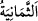
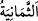
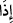
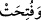

Hayır ve tâat kapısı açıktır, ancak
Herkes iyi amel işlemeye muktedir değildir
“Oraya” cennete “varıp da kapıları açıldığında” yâni onlara bekleme yorgunluğu
isâbet etmemesi için cennetin sekiz kapısı açılmış olduğu halde… Kaldı ki ferah ve
sevinç yurdunun misafirlere ve gelen konuklara ikram kapısı kapanmaz.
Şayet “Cennetlikler cennete geldiklerinde kapılarının açık olması, Hz. Peygamber
(s.a.)’in: “Cennet kapıları ilk olarak bana açılacak!”[152] hadîsiyle reddolunur.”
diyecek olursan, şöyle cevap veririm: Hz. Peygamber (a.s.)’ın açılma duâsı bereketiyle
gerçekleşecek olan, oraya varmalarından evvelki açılıştır. O daha önce duâ etmemiş
olsaydı açılmazdı. Sonra bu kapılar onun duâsıyla hesab bitene kadar açık kalır.
Cennetlikler hesaplarını verip sırattan geçtikten sonra kapıların O’nun duâsı bereketiyle
açılmış olduğunu görürler. Bir hadîste şöyle buyrulmuştur: “Cennetin kapısını ilk
çalacak olan benim. Ben ve ümmetim önceliklerine göre cennete girene kadar diğer
bütün ümmetlere cennet haram kılınmıştır.”[153]
Fakir (Bursevî) der ki: Kapının ilk olarak açılması ve vurulması, cennete ilk olarak
onun gireceğini ifâde eden temsilî anlatımlardır. Onun için başka bir açıklamaya gerek
yoktur.
Cennet kapılarının sekiz tane olduğu nebevî haberlere dayanılarak bilinmektedir:
Nitekim Hz. Peygamber (s.a.): “Cennetin sekiz kapısı vardır. Her iki kapısının arası
bir atlının yetmiş yıllık yürüme mesafesi kadardır. Cennet kapılarının kanatlarından
her ikisi arasındaki mesafe yedi yıllık,[154] -bir rivâyete göre- kırk yıllık yürüme
mesafesi,[155] -bir başka rivâyete göre de- Mekke ile Busra arasındaki mesafe
kadardır.”[156] (Cennet kapılarının sekiz tane olduğu) “__WORD__nin “vâv”ı yardımıyla da
bilineceği söylenmiştir. Ancak “__WORD__nin “vâv”ı devamlılık arzetmemektedir. Nitekim
bu “vav”la ilgili mâlumat Tevbe sûresinin sonunda verilmişti.
Bazıları der ki: Cehennem kapılarının yedi, cennet kapılarının ise sekiz tane olması,
cennetin Allah Teâlâ’nın bir lütfu, cehennemin ise adâleti olmasındandır. Lütuf ise
adâletten fazladır. Cennet rahmetten, cehennem gazabdandır. Rahmet ise gazabdan önde
gelir. Denilmiştir ki: Cehennemde sadece amellere karşılık verilir. Fazladan azap zulüm
olur. Sevabda ise cömertlik vardır. Yine denilmiştir ki: Ezan yedi, ikâmet ise sekiz
cümle olduğu gibi cehennem kapıları yedi, cennet kapıları ise sekiz tanedir. Ezan
okuyup ikamet getiren birine cehennemin yedi kapısı kapatılır, cennetin sekiz kapısı
açılır.
“__WORD__”nın cevabı mahzuftur. İşte oraya vardıklarında dilin anlatamayacağı şeyler olacak,
demektir. Bazı müfessirlere göre ise cevabı “__WORD__tır. “Vav” harfi, oraya geldiklerinde
kapıların zaten açık olduğunu göstermek için ziyâde edilmiştir.
“Bekçileri onlara:” yâni cennetin bekçi ve muhâfızları olan Rıdvân ve diğer melekler,
muttakîlere şöyle derler: “Selam size!” artık istenmeyen herşeyden kurtuldunuz. Selâm